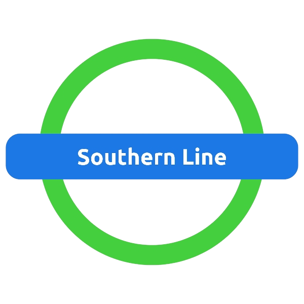
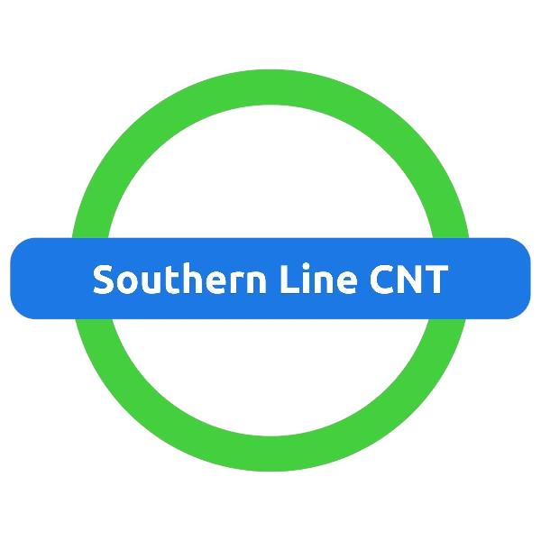
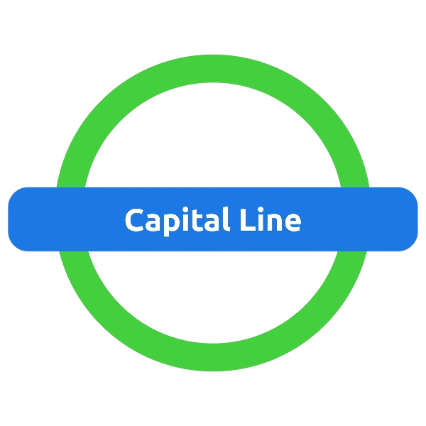

Toniron Transit Company
Toniron Transit Company - Lines
These are all the lines of TTC
Southern Line
 See Stations
The Southern Line goes from Main Roundabout to South Toniron Entrance
Southern Line CNT
 See StationsThe Southern Line CNT is under construction, currently it goes from South Toniron Entrance to Blueford. However since this line is still under construction, this could change.
Capital Line
 See StationsThe Capital Line is under construction, currently it goes from Main Roundabout to Emerald Way. However since this line is still under construction, this could change.
Capital Line
Running (some under construction)
ZK3Line
Running (some under construction
ZK3Line
Running (some under construction
TR1Loop
Under Construction
Southern Line Cnt
Running (some under construction)